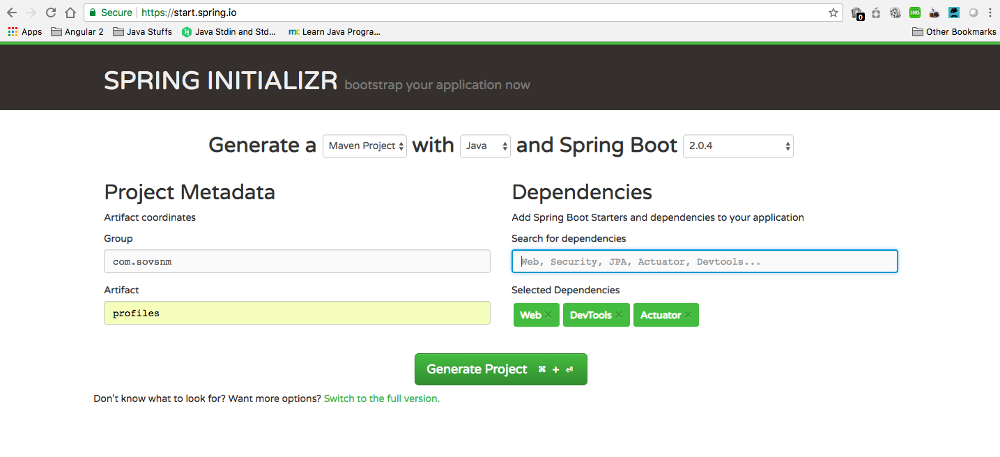
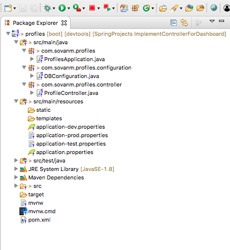
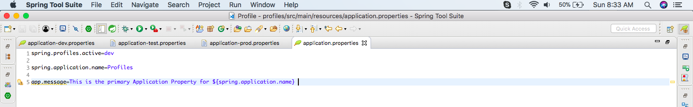
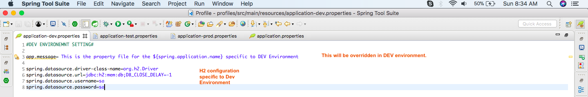
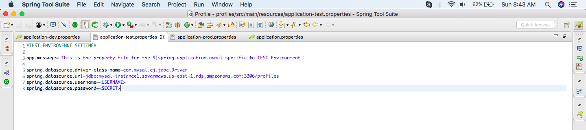
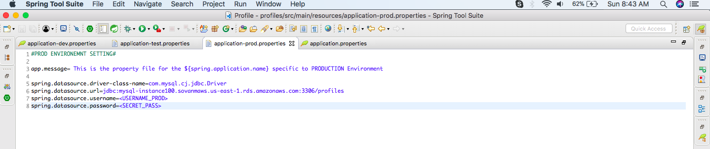
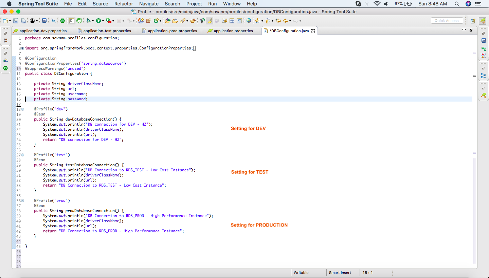
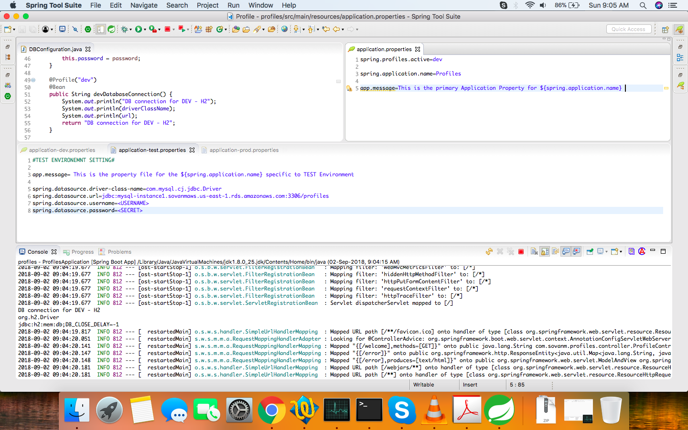
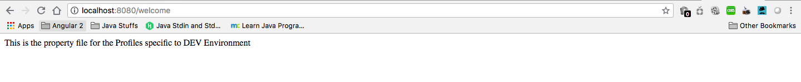
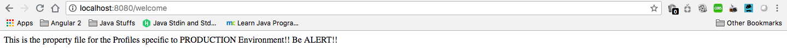

How to Use Profiles in Spring Boot
Want to learn more about the features available in Spring Boot? Check out this post to learn more about how to use profiles in your Spring Boot application.
Join the DZone community and get the full member experience.
Join For FreeSpring Boot is gaining popularity like never before, and I know it will be a persistent player in the coming months. There are some features that every technology has and it is very useful in enterprise applications. In this post, we will talk about one feature in particular: profiles.
What Are Profiles?
Every enterprise application has many environments, like:
Dev | Test | Stage | Prod | UAT / Pre-Prod
Each environment requires a setting that is specific to them. For example, in DEV, we do not need to constantly check database consistency. Whereas in TEST and STAGE, we need to. These environments host specific configurations called Profiles.
How Do we Maintain Profiles?
This is simple — properties files!
We make properties files for each environment and set the profile in the application accordingly, so it will pick the respective properties file. Don't worry, we will see how to set it up.
This article will demonstrate how to setup Profiles for your Spring Boot application.
Let's start with setting up a Spring Boot application from the Spring Starter.

Next, we need to import the project into STS as a Maven Project. Below is the project structure:

In this demo application, we will see how to configure different databases at runtime based on the specific environment by their respective profiles.
As the DB connection is better to be kept in a property file, it remains external to an application and can be changed. We will do so here. But, Spring Boot — by default — provides just one property file ( application.properties). So, how will we segregate the properties based on the environment?
The solution would be to create more property files and add the "profile" name as the suffix and configure Spring Boot to pick the appropriate properties based on the profile.
Then, we need to create three application.properties:
-
application-dev.properties -
application-test.properties -
application-prod.properties
Of course, the application.properties will remain as a master properties file, but if we override any key in the profile-specific file, the latter will gain precedence.
I will now define DB configuration properties for in respective properties file and add code in DBConfiguration.class to pick the appropriate settings.
Here is the base application.properties:

In DEV, we will use an in-memory database:

In TEST, we will be using a lower instance of RDS MySQL database, and in PROD, we will use a higher instance of the MySQL database. (It's the price that matters...)

Now, we are done with properties files. Let's configure in the DBConfiguration.class to pick the correct one.

We have used the @Profile("Dev") to let the system know that this is the BEAN that should be picked up when we set the application profile to DEV. The other two beans will not be created at all.
One last setting is how to let the system know that this is DEV, TEST, or PROD. But, how do we do this?
We will use the application.properties to use the key below:
spring.profiles.active=devFrom here, Spring Boot will know which profile to pick. Let's run the application now!
With the profile in DEV mode, and it should pick H2 DB.


Now, change the profile to PROD. We will see MySQL with High Config for DB. This should be picked, and the message will be overridden with the PROD message.

That's it! We just have to change it once at the application.properties to let Spring Boot know which environment the code is deployed in, and it will do the magic with the setting.
Please visit this repository to access the code to learn more!
Published at DZone with permission of Sovan Misra , DZone MVB. See the original article here.
Opinions expressed by DZone contributors are their own.
Comment (9)